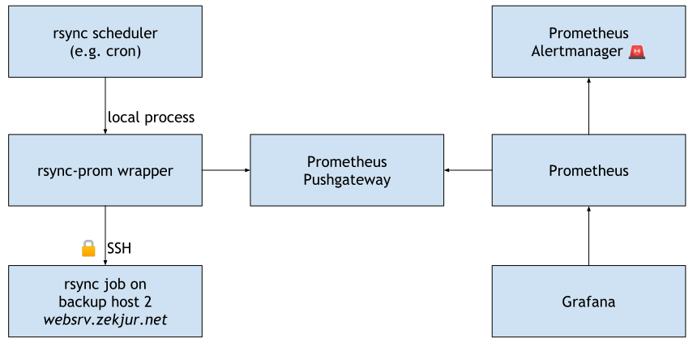

This post is the second article in a series of blog posts about rsync, see the Series Overview.
Now that we know what to use rsync for, how can we best integrate rsync into monitoring and alerting, and on which operating systems does it work?
Monitoring and alerting for rsync jobs using Prometheus
Once you have one or two important rsync jobs, it might make sense to alert
when your job has not completed as expected.
I’m using Prometheus for all my monitoring and alerting.
Because Prometheus pulls metrics from its (typically always-running) targets,
we need an extra component: the Prometheus
Pushgateway. The Pushgateway
stores metrics pushed by short-lived jobs like rsync transfers and makes them
available to subsequent Prometheus pulls.
To integrate rsync with the Prometheus Pushgateway, I wrote
rsyncprom, a small tool that wraps
rsync, or parses rsync output supplied by you. Once rsync completes,
rsyncprom pushes the rsync exit code and parsed statistics about the transfer
to your Pushgateway.
Prometheus server-side setup
First, I set up the Prometheus Pushgateway (via Docker and systemd) on my server.
Then, in my prometheus.conf file, I instruct Prometheus to pull data from my
Pushgateway:
# prometheus.conf
rule_files:
- backups.rules.yml
scrape_configs:
# […]
- job_name: pushgateway
honor_labels: true
static_configs:
- targets: ['pushgateway:9091']
Finally, in backups.rules.yml, I configure an alert on the time series rsync_exit_code:
# backups.rules.yml
groups:
- name: backups.rules
rules:
- alert: RsyncFailing
expr: rsync_exit_code{job="rsync"} > 0
for: 1m
labels:
job: rsync
annotations:
description: rsync {{ $labels.instance }} is failing
summary: rsync {{ $labels.instance }} is failing
This alert will fire any time an rsync job monitored via rsyncprom exits with
a non-zero exit code.
rsync client-side setup
On each machine that runs rsync jobs I want to monitor, I first install
rsyncprom:
go install github.com/stapelberg/rsyncprom/cmd/rsync-prom@latest
Then, I just wrap rsync transfers where it’s most convenient, for example in
my crontab(5)
:
# crontab -e
9 9 * * * /home/michael/go/bin/rsync-prom --job="cron" --instance="gphotos-sync@midna" -- /home/michael/gphotos-sync/sync.sh
The same wrapper technique works in shell scripts or systemd service files.
You can also provide rsync output from Go
code
(this example runs rsync via SSH).
Monitoring architecture
Here’s how the whole setup looks like architecturally:

The rsync scheduler runs on a Raspberry Pi running
gokrazy. The scheduler invokes the rsync job to back
up websrv.zekjur.net via SSH and sends the output to Prometheus, which is
running on a (different) server at an ISP.
Monitoring dashboard
The grafana dashboard looks like this in action:

- The top left table shows the most recent rsync exit code, green means 0 (success).
- The top right graph shows rsync runtime (wall-clock time) over time. Long runtime can have any number of bottlenecks as the reason: network connections, storage devices, slow CPUs.
- The bottom left graph shows rsync dataset size over time. This allows you to quickly pinpoint transfers that are filling your disk up.
- The bottom right graph shows transferred bytes per rsync over time. The higher the value, the higher the amount of change in your data set between synchronization runs.
rsync operating system availability
Now that we have learnt about a couple of typical use-cases, where can you use
rsync to implement these use-cases? The answer is: in most environments, as
rsync is widely available on different Linux and BSD versions.
Macs come with rsync available by default (but it’s an old, patched version),
and OpenBSD comes with a BSD-licensed implementation called
openrsync by default.
On Windows, you can use the Windows Subsystem for Linux.
| Operating System | Implementation | Version |
|---|---|---|
| FreeBSD 13.1 (ports) | tridge | 3.2.3 |
| OpenBSD 7.1 | openrsync | (7.1) |
| OpenBSD 7.1 (ports) | tridge | 3.2.4 |
| NetBSD 9.2 (pkgsrc) | tridge | 3.2.4 |
| Linux | tridge | repology |
| macOS | tridge | 2.6.9 |
Next Up
The third article in this series is rsync, article 3: How does rsync work?. With rsync up and running, it’s time to take a peek under the hood of rsync to better understand how it works.
I run a blog since 2005, spreading knowledge and experience for over 20 years! :)
If you want to support my work, you can buy me a coffee.
Thank you for your support! ❤️